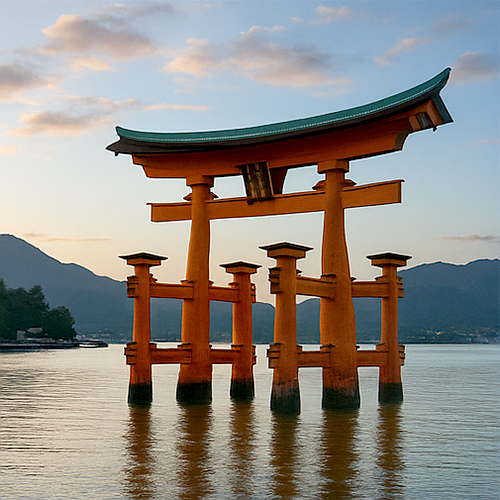

Itsukushima-Schrein – Das schwimmende Torii Japans
Elegant aus den Gewässern der Bucht von Hiroshima emporragend, ist der Itsukushima-Schrein (厳島神社) auf der Insel Miyajima einer der faszinierendsten und spirituell verehrten Orte Japans. Berühmt für sein schwimmendes Torii in leuchtendem Rot, zieht dieser shintoistische Schrein seit Jahrhunderten Reisende mit seiner einzigartigen Architektur, seiner Heiligkeit und seiner wunderschönen natürlichen Umgebung in den Bann.
Eine heilige Insel in Harmonie mit dem Schrein
Ursprünglich im 6. Jahrhundert erbaut und in seiner heutigen Form im Jahr 1168 vom mächtigen Kriegsherrn Taira no Kiyomori wiedererrichtet, wurde der Itsukushima-Schrein den Töchtern der Meeresgottheit Susanoo-no-Mikoto geweiht. Da die Insel als heilig gilt, wurde der Schrein auf Pfählen über dem Meer errichtet, sodass Gläubige sich ihm nähern können, ohne den heiligen Boden zu betreten.
Das schwimmende Torii – Ein Symbol Japans
Über 16 Meter hoch ragend, scheint das majestätische Torii bei Flut zu schweben und erzeugt eine mystische und unvergessliche Silhouette am Horizont. Bei Ebbe können Besucher bis zu seiner Basis gehen. Diese Verbindung zum Meer spiegelt den shintoistischen Respekt vor der Natur wider, und das Torii ist eines der bekanntesten Symbole Japans geworden.
UNESCO-Weltkulturerbe und kulturelle Bedeutung
Im Jahr 1996 wurde der Itsukushima-Schrein als UNESCO-Weltkulturerbe anerkannt, in Würdigung seines historischen, spirituellen und architektonischen Wertes. Seine leuchtend roten Farben sollen böse Geister fernhalten, während die offenen Gänge und das schwimmende Theater den klassischen Stil der Heian-Zeit widerspiegeln.
Miyajima: mehr als nur ein Schrein
Die Insel Miyajima, oft „Insel der Götter“ genannt, bietet weit mehr als nur den Schrein. Schlendern Sie durch die malerischen Straßen mit Geschäften für Momiji Manju (Ahornblatt-förmige Kuchen), begegnen Sie freundlichen wilden Hirschen oder besteigen Sie den Mount Misen für einen Panoramablick über das Seto-Inlandmeer. Bei Sonnenuntergang wird das Torii beleuchtet und schafft eine magische Atmosphäre auf dem Wasser.
Besucherinformationen
- 🌸 Lage: Insel Miyajima, Hatsukaichi, Präfektur Hiroshima
- 🌸 Öffnungszeiten: 6:30 – 18:00 (kann je nach Saison variieren)
- 🌸 Eintritt: ¥300 (zusätzliche Gebühren für Schatzkammer oder Noh-Theater)
- 🌸 Anreise: JR-Zug von Hiroshima bis Station Miyajimaguchi → 10-minütige Fähre nach Miyajima
Warum den Itsukushima-Schrein besuchen?
Ob Sie spirituelle Ruhe suchen, atemberaubende Fotos machen möchten oder in die japanische shintoistische Tradition eintauchen wollen – der Itsukushima-Schrein ist ein unvergessliches Reiseziel. Seine elegante Architektur, sein kulturelles Erbe und seine tiefe Verbindung zum Meer machen ihn zu einem der eindrucksvollsten Erlebnisse in Japan – er sollte auf jeder Reiseroute stehen.
Tags: Itsukushima-Schrein, schwimmendes Torii, Insel Miyajima, UNESCO Japan, Sehenswürdigkeiten Hiroshima, shintoistischer Schrein Japan, panoramische Schreine, spirituelles Reisen, Torii Miyajima, japanisches Kulturerbe
Planen Sie einen Besuch beim Itsukushima-Schrein?
Um ein intensiveres und authentisches Erlebnis zu genießen, empfehlen wir die Buchung eines lokalen, zertifizierten Privatführers über unser Team. Alle unsere Führer sind offiziell von der japanischen Regierung anerkannt und bieten individuell angepasste Touren nach Ihren Interessen. Kontaktieren Sie im Voraus Ihren bevorzugten Führer, um die Verfügbarkeit zu prüfen und fachkundige Unterstützung für Ihre Reise zu erhalten.